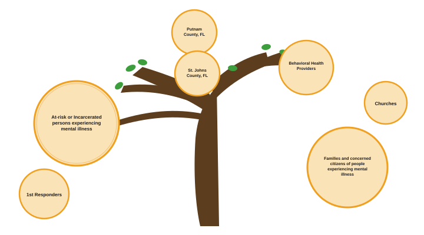

Community Impact Tree
The target population that Patients Not Prisoners intends to serve are the mentally ill, to ultimately prevent incarceration or enhance incarcerated systems that support them. In order for the program to remain focused and to deliver effective services, we've also identified other groups that may be impacted by Patients Not Prisoners' service delivery.
